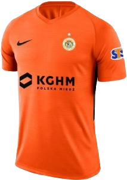
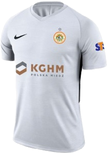
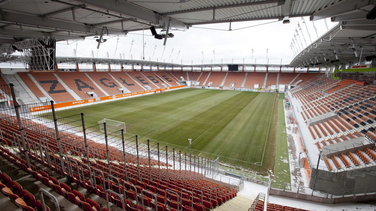

Najnowsze Informacje

ZAGŁĘBIE LUBIN


Informacje o klubie:
- Międzyzakładowy Klub Sportowy Zagłębie Lubin
- Data założenia: 10 września 1945
- Adres: Marii Skłodowskiej-Curie 98, 59-301 Lubin
- Stadion: Stadion Zagłębia - pojemność - 16 100 miejsc
- Prezes: Marcin Lewiński (od 14 września 2019)
- Trener: Martin Ševela SVK (od 16 września 2019)



Napastnicy
Pomocnicy
Obrońcy
Bramkarze
Fanatics Zone
ZGODY
Arka Gdynia
Falubaz Zielona Góra
Odra Opole
Zawisza Bydgoszcz
Polonia Bytom (układ)
KOSY
Legia Warszawa
Wisła Kraków
Karkonosze Jelenia Góra
Miedź Legnica
Chrobry Głogów
Śląsk Wrocław
Lechia Gdańsk
ŁKS Łódź